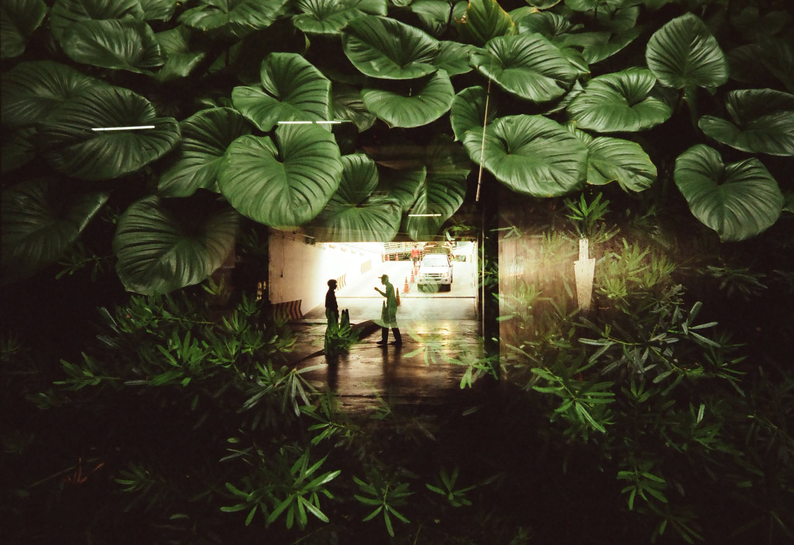

5Hi I'm
RAHAT
TRYING TO LIVE AN HONEST AND PEACEFUL LIFE
01 — Something
A Catchy Heading
Description text here.

Title Here
A short subtitle
Your opening paragraph here. The first letter becomes a drop cap.
Second paragraph.


Card Title
Short description.
Card Title
Short description.

Card Title
Short description.


Project One

Project Two

Project Three